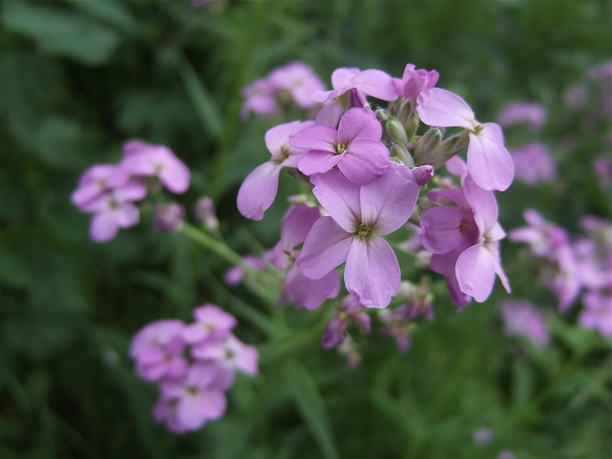

Ein Duftauftritt nach Sonnenuntergang
Die Nachtviole macht ihrem Namen alle Ehre: Tagsüber duftet sie kaum, am Abend und in der Nacht entfaltet sie ihren intensiven, veilchenartigen Geruch. Diese Strategie zielt auf Nachtfalter, die mit ihrem feinen Geruchssinn die Pflanze auch im Dunkeln finden. Der Duft enthält Verbindungen, die auch in echten Veilchen vorkommen — daher der Name „Nachtviole“, obwohl sie zur Familie der Kreuzblütler gehört, nicht zu den Veilchen.
Aus dem Süden eingewandert
Die Nachtviole stammt ursprünglich aus dem Mittelmeerraum und Vorderasien und wurde seit der Antike als Zierpflanze in Bauerngärten kultiviert. Heute ist sie in Mitteleuropa eingebürgert — man findet sie an Bachufern, in Auenwäldern und an Wegrändern, oft als Garten-Flüchtling. Sie ist nicht invasiv und konkurriert nicht mit heimischen Arten.